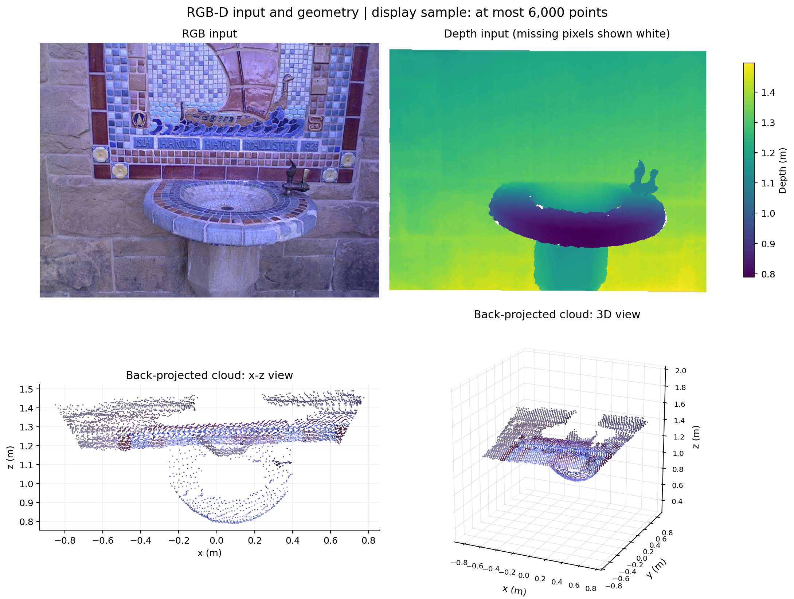
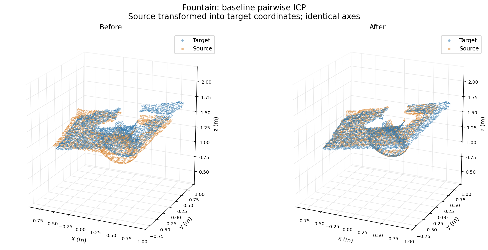
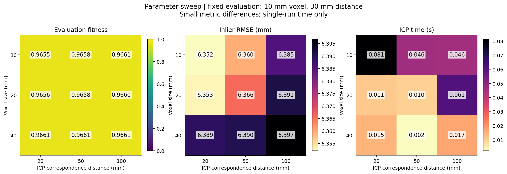
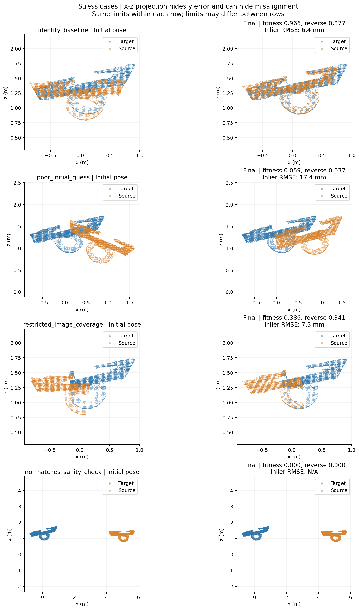

A small offline experiment with six real Fountain RGB-D keyframes. Prepared 2026-10-23 11:05 UTC.
Raw metrics · Matrices and full records · Run details
How do voxel size, correspondence distance, initialization and restricted image coverage affect pairwise ICP?
NumPy pinhole back-projection; Open3D voxel downsampling, statistical outlier removal (20 neighbours, 2.0 standard-deviation ratio), normal estimation (radius = 3 × voxel size), and point-to-plane ICP (at most 80 iterations). ICP is supplied by Open3D, not implemented from scratch here. No learned model is trained.
The default pair is keyframe 0 → 1. These are sampled keyframes, not consecutive raw video frames. Baseline initialization is identity. Dataset poses are used only for the diagnostic comparison after registration.
For keyframe 0 → 1, at voxel 0.02 m and correspondence distance 0.05 m, fixed-evaluation source coverage changed from 0.253 to 0.966. Inlier RMSE changed from 16.764 to 6.366 mm. These two statistics must be read together.




Every row is evaluated at 1 cm voxel size and 3 cm matching distance. Sweep rows use exactly the same evaluation point sets. Cropped cases have different point sets, so their fitness values are not a direct ranking against the full-view case. The reverse column measures target → source coverage. Times are single-run observations, not a rigorous speed benchmark.
| Case | Pair | Voxel m | ICP limit m | Fitness | Reverse | RMSE mm | Ref. Δrot ° | Ref. Δtrans cm |
|---|---|---|---|---|---|---|---|---|
| identity_baseline | 0 → 1 | 0.02 | 0.05 | 0.966 | 0.877 | 6.366 | 1.72 | 1.06 |
| parameter_sweep | 0 → 1 | 0.01 | 0.02 | 0.966 | 0.877 | 6.352 | 1.72 | 0.96 |
| parameter_sweep | 0 → 1 | 0.01 | 0.05 | 0.966 | 0.877 | 6.360 | 1.71 | 1.01 |
| parameter_sweep | 0 → 1 | 0.01 | 0.10 | 0.966 | 0.878 | 6.385 | 1.61 | 1.08 |
| parameter_sweep | 0 → 1 | 0.02 | 0.02 | 0.966 | 0.877 | 6.353 | 1.71 | 0.99 |
| parameter_sweep | 0 → 1 | 0.02 | 0.10 | 0.966 | 0.878 | 6.391 | 1.68 | 1.16 |
| parameter_sweep | 0 → 1 | 0.04 | 0.02 | 0.966 | 0.878 | 6.389 | 1.75 | 1.01 |
| parameter_sweep | 0 → 1 | 0.04 | 0.05 | 0.966 | 0.878 | 6.390 | 1.80 | 0.97 |
| parameter_sweep | 0 → 1 | 0.04 | 0.10 | 0.966 | 0.878 | 6.397 | 1.79 | 1.05 |
| poor_initial_guess | 0 → 1 | 0.02 | 0.05 | 0.059 | 0.037 | 17.401 | 10.34 | 82.02 |
| restricted_image_coverage | 0 → 1 | 0.02 | 0.05 | 0.386 | 0.341 | 7.329 | 1.71 | 1.18 |
| no_matches_sanity_check | 0 → 1 | 0.02 | 0.05 | 0.000 | 0.000 | no matches | 9.82 | 477.48 |
| additional_pair | 2 → 3 | 0.02 | 0.05 | 0.900 | 0.813 | 6.402 | 1.59 | 4.33 |
| additional_pair | 4 → 5 | 0.02 | 0.05 | 0.702 | 0.717 | 12.608 | 1.14 | 28.85 |
Qian-Yi Zhou and Vladlen Koltun, Color Map Optimization for 3D Reconstruction with Consumer Depth Cameras, SIGGRAPH 2014. Author's data page and usage terms. Fountain was recorded with an Asus Xtion Pro Live; original image files are unchanged. This project uses the documented PrimeSense pinhole parameters, rather than performing its own calibration.
Open3D ICP documentation. Open3D: Qian-Yi Zhou, Jaesik Park and Vladlen Koltun, 2018.